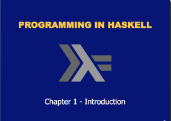
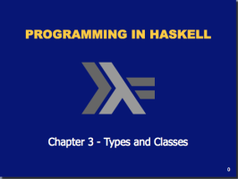
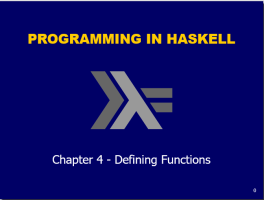
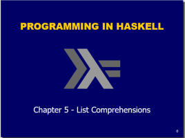
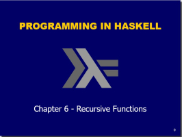

Introduction to Functional Progamming and Haskell
Introduction
Links
First Steps in using GCHi and Haskell
First Steps
Exercises on First Steps
Lab-02
Introduction to Types and Classes
Types and Classes in Haskell
Exercises Types and Classes in Haskell
Lab-03
Lab-04
Defining Functions
Defining Functions in Haskell
Exercises on Functions
List Comprehensions
List Comprehensions
Example using List Comprehensions
Example using List Comprehensions
Exercises on List Comprehensions
Recursive Functions
Recursive Functions
Exercises on Recursive Functions
Functional Programming using Haskell
Mairead Meagher (mmeagher@wit.ie) based on Programming in Haskell, Hutton.
Introduction to Functional Progamming and Haskell

First Steps in using GCHi and Haskell
Introduction to Types and Classes

Defining Functions

List Comprehensions

Recursive Functions
